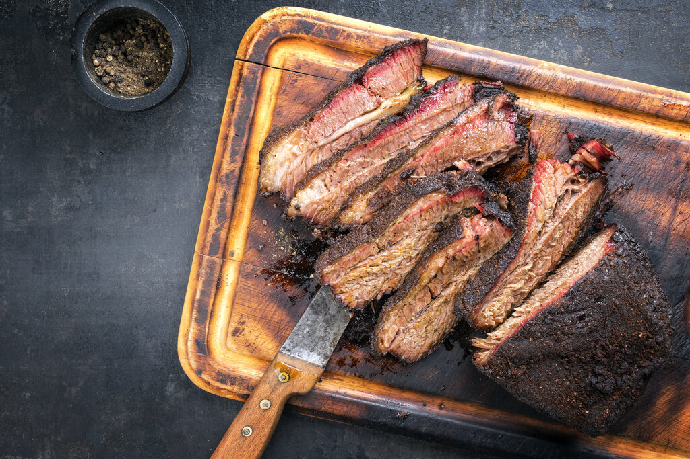

Smoked Recipes

Smoked Steak
Easy smoked steak recipe grilled on a pellet smoker for a rich taste
- 2 top sirloin,ribeye, porterhouse steaks, or any favorite cut
- salt and pepper
- 2 tbsps salted butter,or unsalted butter
- 2 tsps parsley
- Allow your steaks to come to room temperature if not already there.
You can salt the steaks before they reach room temperature,
as this will make them extra tender.
- Preheat pellet smoker to 165 degrees F.
This usually takes around 15 minutes, depending on the smoker.
- Sprinkle the steaks with salt and pepper on both sides.
- Place steaks in the smoker and cook for about 45 minutes
(or until the internal temperature reaches 110 degrees F.)
- Turn the smoker up to 500 degrees F and let it smoke for another
15 minutes or until the internal temperature reaches 135 degrees F (for medium-rare steak).
- Top with a pat of butter and some parsley.
Enjoy!